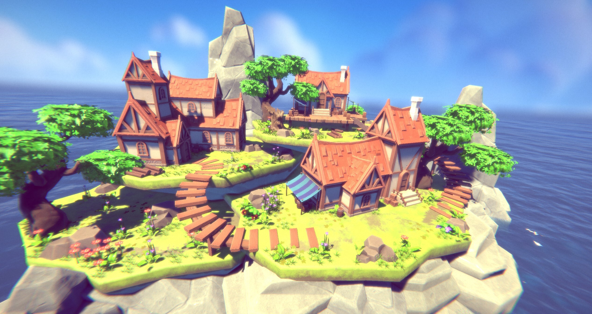

UModeler 2020¶
Version 2.7.26f4 - Nov.16.2020¶
Hotfix : Fixed unexpected triangulation and mesh disappearing caused in the new Byte Stream Mesh feature.
Version 2.7.26f3 - Nov.9.2020¶

Assets : Includes the
NEON CITYdemo pack.Fix : Fixed an issue where UV2 for lightmap wasn’t generated due to the invalid default UV2 param in
Preference.Fix : Fixed unwarpped UV disappearing, after being mirrored using the
Mirror Tool.Fix : Fixed unwrapped UV disappearing, after Remove Doubles being applied and Undoing or Duplication by
Ctrl+DFix : Fixed loop slict tool bug where some polygons or loop edges disappeared.
Enhancement :
Export Tool- Supports exporting Multiple UModeler Objects to one .obj file.Enhancement : Supports the
Byte Stream Meshto reduce the .unity file size and file diff, and improves the performance of saving/loading a scene and switching between Play and Edit mode.Enhancement :
Eraser Tool- Vertex deletion connects two adjacent vertices. It removed the polygon which contains the vertex before.Enhancement : The
Rect Gizmoin the UV Editor supports the proportionate scaling holdingSHIFT.Enhancement :
Pinchproperty inLoop Slicetool has been added.Feature : Added
Mirror Object Toolwhich duplicates and mirrors the selected UModeler Object.
Version 2.7.25f4 - Oct.27.2020¶
Assets : Includes the Pastel Town Demo pack.
Hotfix : Fixed UV2 for lightmap not being unwrapped by ensuring that Unwrap params for lightmap are always valid.
Hotfix : Fixed unnecessary edges creation when multiple polygons are inset using the Inset Tool with Group setting.
Hotfix : Fixed smoothing groups not working in Mirror mode.
Hotfix : Fixed null reference error happening when more than 2 vertices in a polygon are removed with the Eraser tool.
Version 2.7.25 - Oct.16.2020¶

Assets : Includes the Pastel Town Demo pack exclusively on UModeler 2.7.25.
Fix : Fixed redundant polygons on the mirror plane in the Mirror mode.
Fix : Fixed UV Editor bug where a texture in the UV Edior isn’t clear in HDRP
Fix : Fixed Bevel tool bug where Profile param doesn’t work as Width param is too small.
Fix : Fixed the icon button layout being broken in the inspector.
Fix : Fixed the editor pause for a while when switching a tool when UModeler mesh has lots of polygons.
Fix : Fixed a bug where polygons behind the camera are selected by the rectangle selection.
Fix : Fixed a stack overflow issue happening at the beginning of UModeler.
Enhancement : Eraser Tool - Supports removing an edge shared by two triangles which are not coplanar.
Enhancement : The edge mode of the Bridge Tool - Preserves UVs and Smoothing groups after bridging two edges.
Enhancement : The polygon mode of the Bridge Tool - Improved briding the two facing polygons.
Enhancement : Improved the editable mesh architecture to increase the editing performance.
Version 2.7.24 - Sep.17.2020¶

Assets : Provides The Island Village Demo pack exclusively on UModeler 2.7.24.
Feature : Added Vertex Connection and Edge Connection functions in Vertex/Edge Tools.
Feature : Added 3D cursor window with some helper buttons so that positions can be typed and pivot position can move to 3d cursor etc.
Feature : Added
Refresh Object Toolin Misc Group to refresh the selected UModeler objects not the whole objects in a scene.Enhancement : Enhanced
V Snapso that the V snapping can be started from a non-selected vertex by dragging.Enhancement : Moved the entire UV by pressing
F keyas no UV elements are selected.Enhancement : Enabled 3D cursor to be moved in Object Mode.
Enhancement : Added X button to the Status Window.
Enhancement : Made it possible to change the pivot position by selecting an element holding SHIFT.
Fix : Fixed Null Exception Error in Unity 5.6.7 regarding Prefab.
Fix : Fixed smoothing groups not being preserved after a part of UModeler is detached or combined with others.
Version 2.7.23f2 - Aug.26.2020¶
Hotfix - Improved Refresh All function so that it ensuers 100% fix of broken UV2 for lightmap all the time
Version 2.7.23 - Aug.20.2020¶
Fixed
Distanceparameter in the inspector not working in Vertex/Edge/Polygon tools.Fixed broken UV2 for lightmap not being restored by
Refresh All.Fixed the scene switch function by pressing
Shift + Spacenot working in UModeler editor mode.Added deselecting the elements within the selection box by
Ctrl + LMB Drag.
Version 2.7.22 - Aug.6.2020¶
Fixed non-UModeler object jump issue happening when it is selected with World Grid Snap enabled.
Added
Bake Positionbutton inMisc/Bake Transform Tool. This makes the position zero and applies the difference to each vertex position.Modified
Bake Allbehaviour inMisc/Bake Transform Tool. It used set the pivot to the center of AABB. Now it set the pivot to (0,0,0).Fixed the error message in Prefab Window when the prefab object is a non-umodeler object and has a UModeler object as a child.
Fixed a broken UVs when a concave polygon gets unwrapped using Plane Unwrap Tool.
Handled the Prefab window dirty flag issue. Only dirty flag is marked when the UModeler prefab object doesn’t have an asset file.
Version 2.7.21 - July.30.2020¶
Fixed the menu type setting like Icon/Text based menu not being restored in some cases.
Fixed the Move Snap Size in Settings window not being resotred.
Fixed UModeler object jumps with World Grid Snap enabled when the parent object is transformed.
Fixed Unity gizmo disappearing in Object mode when being undone.
Fixed creating a broken box when Scale in Trasnform component isn’t (1,1,1)
Fixed a lag and rapid memory growth issue caused by redundant RefreshAll calling when a parent UModeler object with many child UModeler objects gets selected.
Fixed an issue where a dirty flag is marked just when UModeler object being selected and it caused redundant source control diffs.
Fixed the Fit tool issue in UV Editor where the selected UV islands weren’t fitted in (0,0)-(1,1) range.
Fixed the UV layout Export bug where the exported .png has an artifact.
Fixed the shadow disappearing bug when there is an empty UModeler object in a scene.
Version 2.7.20 - July.20.2020¶
Fixed PushPull bug where some newly created polygons were turned over in a specific cases.
Fixed a tooltip issue where raw html tags are exposed just after UModeler package is loaded in a project.
Allowed both Shift key and Ctrl key to select multple elements. The difference is that holding Ctrl for box selection doesn’t work anymore like Unity’s Ctrl box selection.
Version 2.7.19 - July.3.2020¶
Fixed UV param reset bug where primitive shapes are created on a polygon.
Fixed a bug where icon size gets bigger when Archimatix is installed in the project.
Fixed a bug where a polygon which is being transformed with the move gizmo by dragging jumps when the cursor gets out of the scene view.
Made the current menu type(Icon or Text based menu) maintained even after unity is restarted.
Version 2.7.18 - June.24.2020¶
Enhanced the UModeler status window. Now it’s a movable floating window.
Added a new toggle called Invisible in Local Settings. If on, the UModeler object isn’t visible in Play Mode. This will be useful if a trigger or collider object is needed.
Allowed Polybrush to edit UModeler mesh.
Version 2.7.17 - June.15.2020¶
Fix : Fixed an issue where Prefab UModeler object in Project shouldn’t have children objects.
Fix : Fixed a bug where UModeler meshes disappear after returning the edit mode from the play mode.
Fix : Fixed a bug where UModeler meshes disappear due to setting the incorrect bound box to a renderable mesh.
Version 2.7.16 - June.9.2020¶
Fix : Fixed a bug where Scene changes happen whenever UModeler object being selected due to latestID in UModeler class increasing.
Fix : Fixed a bug where mesh id changes even though umodeler doesn’t change when being refreshed all.
Fix : Fixed an issue where a child object jumps as polygons are added to the parent empty UModeler object by1 creating a primitive shape like box, cone, stair etc.
Fix : Fixed an issue where vertex/polygon cube overlays are not displayed in Prefab Mode.
Fix : Fixed an issue where overlapped edges were not selected as expected in Edge Tool.
Version 2.7.15 - June.2.2020¶
Improvement : Made the prefab with UModeler more reliable. Propagating changes of an UModeler prefab instance works in most cases.
Fix : Fixed a bug where UI layout is messed up in Material Tool when undoing a material slot being added.
Change : Added a shortcut to move 3D cursor to the selected elements’ pivot. The default one is
Ctrl+Shift+3.Change : Enabled textures to be display repeatedly in UV Editor.
Tex X NumandTex Y Numparams have been added in UV Editor settings.
Version 2.7.14 - May.27.2020¶
Feature : Added
PivotandCentertoggle for the pivot settings inUV EditorFeature : Added focusing on the selected elements by pressing
FFeature : Added vertex position overlay display in Settings.
Feature : Added a new button called
Move Cursorto move the 3D cursor to the selected elements pivot position.Fix : Added the scroll bar to the Preference window.
Fix : Fixed an issue of too small or big gizmo size according to Camera FOV
Fix : Fixed a bug where the mirror plane doesn’t move to a vertex as it is selected with LMB down in
Mirror Tool.Fix : Fixed a bug where the mirror plane arrow isn’t picked by LMB down.
Tweak : Removed
Ignoreitem in Boundary property inMirror tool.
Version 2.7.13 - May.19.2020¶
Feature : Added shortcuts for moving snap type back and forth.
Ctrl+Shift+Left ArrowandRight Arrow.Feature : Added shortcuts for moving move snap size back and forth.
Ctrl+Shift+Up ArrowandDown Arrow.Feature : Added shortcuts for moving snap type of UV editor back and forth.
Ctrl+Shift+Left ArrowandRight Arrow.Feature : Added shortcuts for moving move snap size back and forth in UV Editor.
Ctrl+Shift+Up ArrowandDown Arrow.Feature : Added World Grid Snap in UV Editor
Feature : Added
VSnap for UV EditorImprovement : Made the settings window resized to be fitted with the listed settings items.
Fix : Fixed a bug where the selected polygons are gone when selecting a UModeler object after exiting UV tool by deselecting all.
Fix : Fixed a duplicated UModeler object issue where the original mesh and the duplicated mesh are coupled.
Fix : Fixed a polygon color tool issue where polygon selection by a color didn’t work.
Fix : Fixed a bug where the selected polygons disappear when re-entering UModeler editor mode just after exiting from UV tool by clicking on an empty space in Hierarchy window.
Version 2.7.12 - May.12.2020¶
Feature : Enabled the Settings popup window to be a dockable window
Feature : Custom grid snap size and rotation snap size have been supported.
Feature : New UI for managing custom grid and rotation snap size has been added to both the Settings and the UV Editor Settings.
Feature :
Generate UVsproperty in Element tools has been added instead ofReset UVsproperty because resetting UVs isn’t right behaviour.Feature : Added
Floor Heightproperty in tools of Drawing group and Primitive Shapes group.Feature : Added
Default Materialin the Preference so that users can set a default material that they wish to use.Improvement : Changed the snap type combox box to a grid UI.
Improvement :
Snap To Vertexproperty in Vertex/Edge/Polygon tools has been removed. It has been replaced to V Snapping.Improvement :
Reset UVsproperty in Element tools has been removed.Fix : Fixed a bug where UModeler objects get shifted when all of them are selected while
World Grid Snapis enabled.Fix : Fixed a coupling issue between Default UV Param in Preference and UV param in UV tool.
Fix : Fixed an issue where a rather wide UModeler mesh sometimes disappears depending on where the camera is viewing.
Version 2.7.11 - May.5.2020¶
Fixed a freezing issue happening when UModeler object gets selected.
Fixed UModeler mesh disappearing with many error messages when entering the play mode.
Fixed a prefab issue happening in a untitled scene
Version 2.7.10 - April.27.2020¶
Feature : Added V Vertex Snapping
Version 2.7.9 - April.15.2020¶
Fix : Fixed an issue where duplicated UModeler objects shared meshes
Fix : Fixed a material issue where new assigned materials of UModeler prefab objects returned to the default ones.
Fix : Fixed a bug where UModeler mesh disappeared when it is selected after Lightmap Static in Local Settings is toggled on/off with multiple selected UModeler objects.
Fix : Fixed an issue where X axis corresponded with Depth param and Y axis corresponded with Width param in Rectangle, Box, Room and Stair tools.
Enhancement : Exposed an icon for UModelerizing on the toolbar in the scene view only when non-umodeler objects with mesh filters are selected.
Enhancement : Added UModelerlize item to the GameObject menu and the popup menu in the hierarchy window.
Version 2.7.8 - April.7.2020¶
Fix : Fixed an issue of UV Default parameters for UV Tool.
Fix : Fixed a bug where helper arrows and planes in Multiple PushPull and Mirror tool are affected by transform’s scale and rotation
Fix : Fixed a bug where UModelerized meshes disappear when they are selected.
Change : Allows 3D cursor to be snapped to the center of edge and polygon by moving a gizmo holding LMB
Version 2.7.7 - March.31.2020¶
Enhancement : Added UV Tool default parameters to Preference. Shift, Rotation, Scale parameter in UV Tool are reset based on them.
Enhancement : Added [Create Smoothing Groups as UModelerize]. If it is enabled, smoothing groups will be created when UModelerlizing.
Fix : Wrong Settings windows location while Multiple Scene views are opened.
Fix : Fixed an issue where a shape created with One-Click Build wasn’t affected by World Grid Snap.
Fix : Fixed a bug where a primitive shape object went away when undoing/redoing.
Version 2.7.6 - March.26.2020¶
Fix : Fixed a bug where object highlight is invisible after UModeler component is removed.
Fix : Fixed UModeler mesh disappearing when multiple UModeler objects are deleted and undone and one of them are selected.
Fix : Fixed an issue where the created UModeler object by redoing wasn’t selected so more redoing didn’t work.
Fix : Fixed a bug where a mesh isn’t rendered when a UModeler component is added to the empty game object and create some primitive shapes.
Improvement : Warning message is displayed when Rotate and Scale gizmo are invisible because the 3D cursor is away from the current camera view.
Version 2.7.5 - March.16.2020¶
Feature : Added Auto layout tool to UV Editor to enable multiple selected polygons to be unwrap using Auto layout at once.
Enhancement : Added “Select Only Visible” property to the 18 following tools.
Drawing Group - Line, Arc, Rectangle, Disk, Side Stair, Parallel
Primitive Shapes Group - Box, Room, Stair, Cylinder, Cone, Spiral Stair, Sphere, Capsule
Add Group : PushPull, Inset, Clone
Remove Group : Eraser
Enhancement : Now while “Select Only Visible” property is on, backfaced polygons can’t be selected.
Enhancement : Refresh All button has been exposed in the toolbar.
Fix : Fixed a bug where Unity gizmo disappeared when 3D cursor button is clicked.
Fix : Fixed an issue where two cube cursors were displayed in Cylinder, Cone and Capsule Tools
Fix : Fixed a bug where children objects were moved when the parent UModeler object pivot was changed.
Fix : Fixed an issue where Polygon tool was forced to be selected after Settings icons were toggled.
Version 2.7.4 - March.10.2020¶
Fix : Fixed an issue where the size of box overlay for selection representation changed abruptly when you move a mouse between the game view and the scene view on play mode.
Feature : Implemented Smoothing group generation when UModelerizing considering polygon’s adjacency and normals.
Version 2.7.3 - March.6.2020¶
Feature : Added a module to collect usability data using Google analyst.
Feature : Added focusing on selected elements pressing ‘F’ in UV Editor
Fix : Fix an issue where UV Editor camera isn’t located at the center of the view, which causes unwrapped polygons with autolayout being out of the center of the view.
Fix : Fix a bug where edges in too small UModeler mesh aren’t selected correctly.
Fix : Fix an issue where the Settings window is occluded by the global axis when the scene view is too narrow.
Fix : Allowed minus scale values in UV Tool so that up-side down UVs can be reset by pressing Reset UVs button.
Version 2.7.2 - Feb.25.2020¶
Fix : Fixed issues in font, size and position of Commentary box on Unity 2019.3
Fix : Added shortcuts of 3D cursor(SHIFT+A) and Settings(SHIFT+W).
Fix : Fixed a pivot of rotation and scale gizmos when 3D cursor is enabled.
Fix : Made unwrapped polygons’ uvs not transformed in UV Tool.
Fix : Fixed an auto layout issue where a polygon is unwrapped with the same density as the adjacent one which has been already unwrapped.
Fix : Fixed an auto layout issue where the first unwrapped polygon is too big. Now it is re-scaled so that it is fit in the UV Editor view size.
Version 2.7.1.2 - Jan.30.2020¶
Fix : Fixed an issue where Transform properties in the inspector have different looks from the original ones.
Version 2.7.1.1 - Jan.29.2020¶
Fix : Fixed an issue related to upside down material UVs.
Version 2.7.1 - Jan.28.2020¶
Enhancement : Allowed minus thickness of Room tool
Enhancement : Allowed Flip Tool in Object mode, which enables flipping all polygons at once.
Enhancement : Added Increment Snap. Now None, World Grid Snap and Increment Snap are available.
Fix : Fixed an issue that a Prefab icon in the project window would change quickly
Fix : Fixed an issue regarding editing UModeler in Prefab mode
Fix : UV reset bug when vertex/edge/polygons being transformed by adding [Reset UVs] property.
Fix : Fixed a bug where UModeler prefab instance would disappear when a prefab is placed in a level by dragging.
Fix : Fixed an issue where child UModeler objects would get invisible when its parent prefab is instanced.
Fix : Made a mesh collider up to date whenever UModeler mesh changes.
Version 2.7.0 - Jan.7.2020¶
Fix : Fixed InvalidCastException in TPUModelerEditor.BaseTool.Properties[T]
Fix : Fixed bug where a material assigned by dragging gets back to the previous one when entering play mode.
Fix : Fixed bug where .obj file exported from UModeler has floating number with commas for separating decimals in Russian locale.
Enhancement : Enabled Grid snap to be done along each X, Y, Z.
Enhancement : Improved Autolayout so that the current double-clicked polygon can be stitched next to the just previous selected polygon.